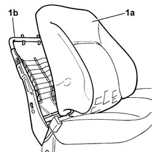

7045A88 Front seat BACKREST UPHOLSTERY, left or right - R.R. with seat removed
- Path
- Procedures > 70 FITTINGS > 7045 FRONT SEATS > 7045A front seat assembly > 7045A88 Front seat BACKREST UPHOLSTERY, left or right - R.R. with seat removed
- Kind
- repair procedure (removal / refitting; the operation number is the code)
- Applies to
- all engines; all production periods
- Interactive page
- https://sloeber94.github.io/elrnDB-fDbl/en/#/2585174
Applies to: all engines; all production periods
 Removing
Removing
 Refitting
RefittingOp. 7045B12 FRONT SEAT HEAD RESTRAINT, LEFT OR RIGHT - R.R. WITH FRONT SEAT REMOVED
Op. 7045B18 FRONT SEAT ARMREST - R.R.
Op. 7045B08 FRONT HEAD RESTRAINT PINS - R.R.
1. Prise up padding (1a) from the seat squab reinforcement (1b) and remove.

Applies to: all engines; all production periods
Refitting
RemovingFit the padding to the seat squab reinforcement.
Op. 7045B08 FRONT HEAD RESTRAINT PINS - R.R.
Op. 7045B18 FRONT SEAT ARMREST - R.R.
Op. 7045B12 FRONT SEAT HEAD RESTRAINT, LEFT OR RIGHT - R.R. WITH FRONT SEAT REMOVED
Topics linked from this page (4)
- 7045A20 SQUAB COMPLETE with a front seat with air-bag, height adjustment and lumbar adjustment, left or right - R.R.
- 7045B08 front head restraint pins - r r
- 7045B12 lh or rh front seat head restraint - r r with front seat removed
- 7045B18 front seat arm rest